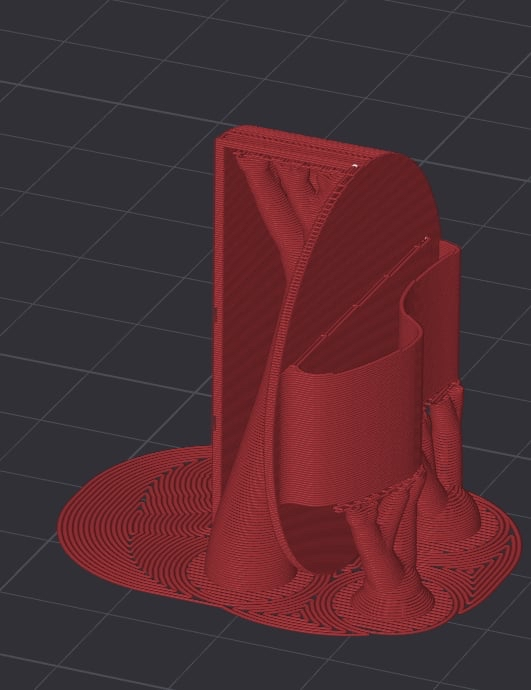
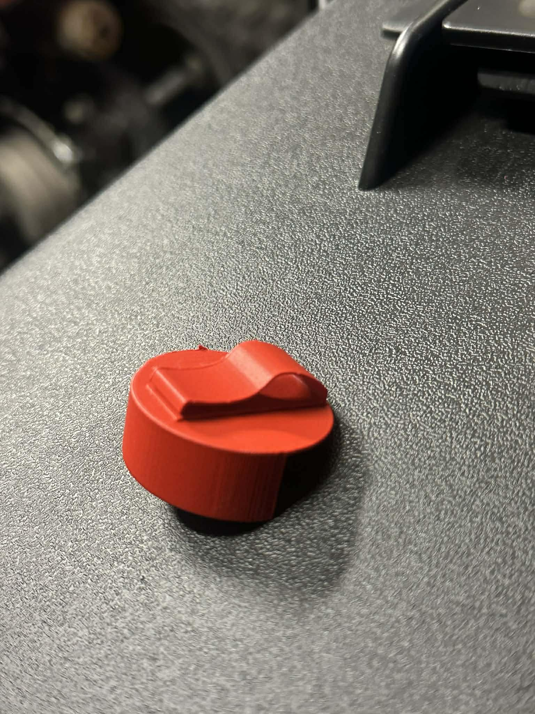
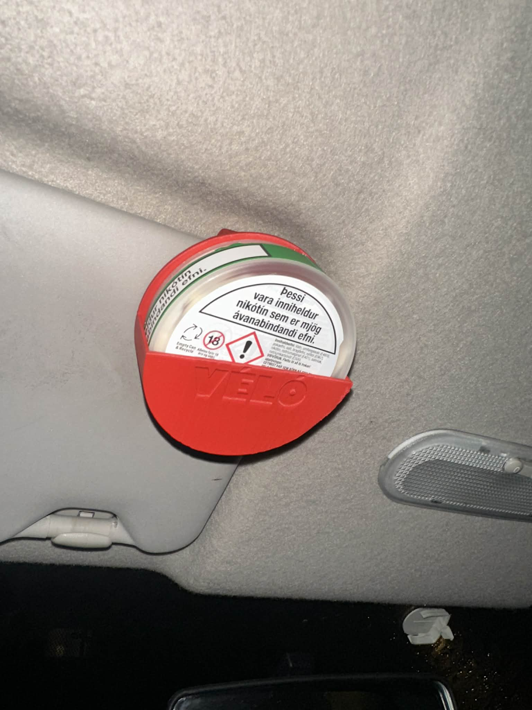

3D skönnun
Ég ákvað að 3D-skanna nikótínpúðadollu sem vinkona mín átti til að fá nákvæmt grunnmódel fyrir hönnun og frekari úrvinnslu. Til þess notaði ég Polycam í símanum, sem gerir mér kleift að búa til þrívítt líkan án sérhæfðs búnaðar. Í stuttu máli virkar 3D-skönnun þannig að forritið safnar mörgum myndum af hlutnum úr mismunandi sjónarhornum og finnur sameiginleg „kennileiti“ á milli mynda. Út frá því er reiknað út form hlutarins og byggt upp punkta- eða netlíkanið (mesh). Að lokum er hægt að leggja á líkanið áferð (texture) þannig að það líti út eins og raunverulegi hluturinn. Til að fá góða niðurstöðu passa ég að lýsing sé jöfn, hreyfi mig í hring í kringum hlutinn og nái bæði toppi, hliðum og botni. Skönnunin sparaði tíma, minnkaði líkur á mælivillum og gaf mér raunhæfan grunn til að vinna áfram með í CAD.
Eins og sést kom módelið ágætlega út, hins vegar átti það í erfiðleikum með borðið í kring. Ég var samt sáttur með niðurstöðuna. Til að bæta skönnunina væri hægt að halda stöðugri hreyfingu, taka fleiri myndir og ná fleiri sjónarhornum; í þessari skönnun tók ég aðeins um 20 myndir.
3D prentun
Ég hannaði nikótínpúðahaldara og ákvað að setja Véló framan á sem skýran hönnunarþátt. Nafnið er meðvitaður orðaleikur sem tengir saman nikótínpúðamerkið VELO og Vélina, nemendafélagið sem ég er forseti af. Með þessu verður haldarinn ekki bara praktísk lausn, heldur líka hluti af sjálfsmynd og ímynd félagsins — auðþekkjanlegur og tengdur félagsstarfinu. Hönnunin nýtir einfalda formgerð og skýra merkingu til að sameina notagildi og sjónræna tengingu við Vélina.
Hönnunin fór í gegnum þrjú þrep. Fyrst leitaði ég að málsetningum á netinu og hannaði út frá þeim. Ég vissi að ég vildi gera eins konar klemmu aftan á haldarann sem hægt væri að setja í bílinn eða jafnvel á bjórkippuna úr fyrri verkefnum. Það var kúnst að hanna klemmuna og tók mig smá tíma, þannig að ég ákvað að prófa hönnunina með því að prenta út í 50% stærð. Ég byrjaði með hönnun þar sem klemmuþykktin var 0,6 mm í 100% skala, en þá var ekki hægt að prenta út í 50% þar sem þvermálið á stútnum á prentaranum er 0,4 mm. Þess vegna stækkaði ég þykktina í 1 mm og prentaði. Áður en prentun gat hafist þurfti ég að velja hentuga stöðu fyrir stuðningana (supports), og eftir smá prófanir varð þessi staða fyrir valinu.

Þessi staða hentaði vel til að prenta klemmuna, en hins vegar fór það á kostnað útlits á einni hlið hringsins. Eftir prentun kom í ljós að klemman var ekki nógu þykk og myndi líklega brotna.

Því fór ég aftur í Fusion og breytti þykkt klemmunnar í 2 mm og lagaði lögunina. Þetta er því lokahönnunin.
Þetta reyndist fullkomin hönnun, tilbúin í prentun í sömu stöðu og áður. Hluturinn hentar mun betur í additive manufacturing (3D prentun) en í hefðbundinni subtractive framleiðslu. Formið inniheldur sveigðar, mjóar og innskornar geometríur sem eru auðveldar að byggja upp lag fyrir lag, en myndu krefjast flókinna uppsetninga og takmarkast af verkfæraaðgengi í fræsingu. Í subtractive framleiðslu þyrfti annaðhvort að skipta hlutnum í marga parta, fræsa þá í sitthvoru lagi og líma eða festa saman, eða nota dýrari búnað eins og 5-ása fræsingu með sérhæfðum skurðarverkfærum. Einnig yrðu innri horn alltaf með radíus sem ræðst af verkfærisþvermáli, og mjög mjóar veggir gætu valdið titringi og lélegri yfirborðsáferð. Með 3D prentun er hins vegar hægt að framleiða hlutinn í einu stykki, ná flóknum formum án samsetningar og halda hönnuninni eins og hún er án þess að fórna virkni eða útliti.

Hér má sjá lokahlutinn í bíl með dollu í sér. Ég framleiddi hlutinn með additive manufacturing og notaði Bambu Lab A1 3D prentara. Sá prentari hentar vel fyrir þessa tegund hönnunar þar sem hann getur byggt upp flókin form lag fyrir lag án þess að þurfa að skipta hlutnum í marga hluta eða hanna sérstaklega fyrir verkfæraaðgengi eins og í fræsingu. Með Bambu Lab A1 gat ég prentað hlutinn í einu stykki og náð þeim sveigðu flötum, innskotum og mjóu veggjum sem væru erfiðir og dýrir í subtractive framleiðslu. Þetta gerði framleiðsluferlið bæði einfaldara og áreiðanlegra og leyfði mér að halda hönnuninni óbreyttri án þess að fórna virkni.
Ég fékk mikinn innblástur frá þessum hönnunum á netinu — Zyn Can Holder á Thangs (3D Sanctuary) og svipaðri lausn á Thingiverse. Ég fann þessar hannanir með því að leita að „Zyn can holder“. Þrátt fyrir það var öll hönnunin mín teiknuð frá grunni í CAD og útfærð með mínum eigin málsetningum, festingum og útlitshönnun. Markmiðið var að búa til eigin útgáfu sem hentar betur mínum notkunarkröfum og framleiðsluferli.
Lærdómur
Ég lærði mikið á þessu verkefni um 3D-prentun, bæði hvað varðar undirbúning fyrir prentun og hvernig hönnunin hefur bein áhrif á gæði og árangur. Með endurteknum prófunum fékk ég betri tilfinningu fyrir tolerönsum, veggþykkt, styrkingum og því hvenær þarf að nota stuðningsstrúktúra til að tryggja góða yfirborðsáferð og áreiðanlega prentun. Samhliða þessu fékk ég líka dýpri skilning á Autodesk Fusion og þróaði vinnuferlið mitt töluvert. Ég notaði ýmis verkfæri og „features“ sem ég hafði ekki nýtt áður, til dæmis til að móta flóknari sveigjur, bæta við nákvæmum festingum, stilla parametrískar víddir og endurtaka breytingar hratt án þess að þurfa að endurteikna. Í heildina hjálpaði verkefnið mér að tengja saman hönnun og framleiðslu á mun raunhæfari hátt og gaf mér betri innsýn í hvernig CAD, prentstillingar og efnishegðun vinna saman í framkvæmd.